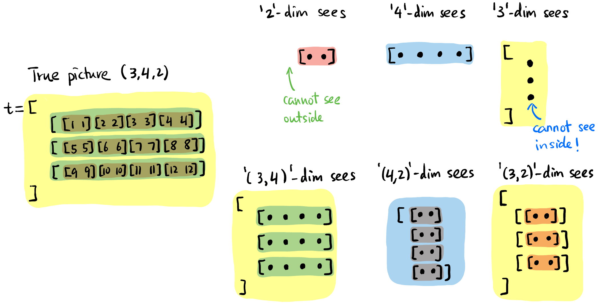
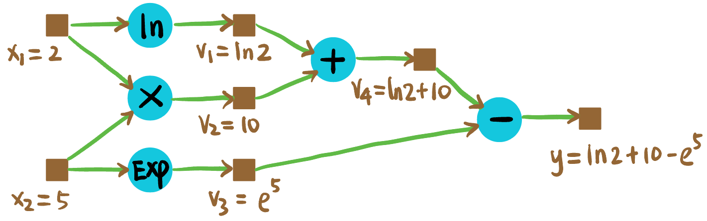
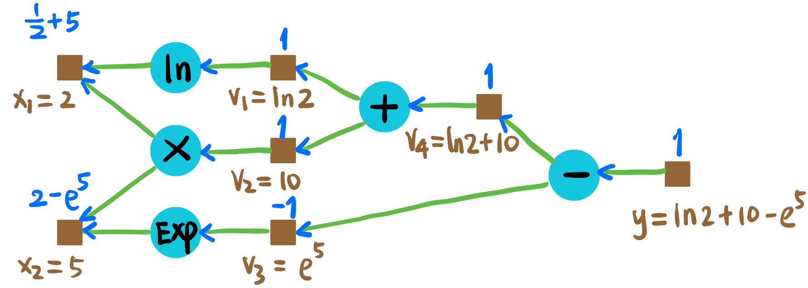
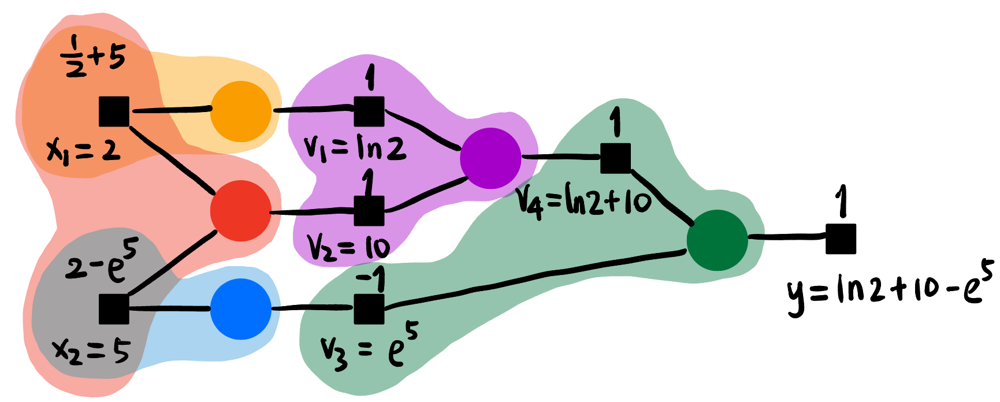

ML Infra 基础
Tensor 张量
动机: 很多地位都相同的数据可以用一维数组存储. 如果有很多不同「地位」的数据, 我们给没种地位分配一个维度来存储, 这就是张量.
名字来源: 由于数学里 \((0,k)\)-tensor \(T: V^k \to \mathbb{F}\) 在选取一组 basis \(\{\mathbf{e}_i\}_{i=1}^k\) 后的 representation 刚好是一个 \(k\) 维数组 \(T_{i_1i_2 \cdots i_k}\) (正如 linear functional 可以被一个 covector 描述, bilinear functional 可以被一个 matrix 描述).
机器学习里 training data, kernel, feature map 等都用 tensor 来描述, Python 自带的
list和np.array(), 统统都要转化为torch.tensor来进行计算 (因为Tensor类提供了很多现成的方法可以调用).import torch import numpy as np # python list to tensor data_list = [[1, 2, 3], [4, 5, 6]] list2tensor = torch.tensor(data_list) # numpy array to tensor data_array = np.array([[1, 2, 3], [4, 5, 6]]) array2tensor = torch.from_numpy(data_array)
Tensor Memory Layout
4D tensor: 特别是在图像处理中, 4D 张量非常常见, 现在单独详细研究一下它:
H, W, C(D), N(B) 维度语义: Height, Width, Channel(Depth), Batch size (见 Figure fig-tensor-layout 左图).
描述顺序和内存中的布局1: (注意无论多少维度的张量, 在内存中显然都是以 (也只能以) 一维数组的形式连续存储).
- HWCN: Batch 在最后.
- NHWC: Batch 在最前,
numpy采用. - NCHW: Batch 在最前,
pytorch采用 (个人感觉这是最符合直觉的顺序!)

Figure 1: 三种 Data Layout Formats [1].
1 记忆方法: 反过来看, 如 NHWC, 先沿着 C 方向将数据拉直, 结束后跳到下一个 W, 然后换 H, 最后换 N.
Mental Picture of Tensors
同一个中括号内用逗号分割的元素一般被认为地位相同. 比如下面
1,2,3地位相同,[1,2,3]和[4,5,6]地位相同.Tensor size: 笔者习惯从最内层中括号开始读起, 每层中括号相同地位的元素个数即为该维度的大小, 从右向左 列出来即为 tensor shape.
比如:
torch.Size([2, 4])应解读为两个
[....]而不是 4 个[..].这里留两个练习, 给出下面两个 tensor 的 shape:
t = torch.tensor([ [ [1], [2], [3], [4] ], [ [5], [6], [7], [8] ], [ [9], [10], [11], [12] ] ]) u = torch.tensor([ [ [ [ [1] ] ], [ [ [2] ] ] ] ]) print(t.shape) # 输出: torch.Size([3, 4, 1]) print(u.shape) # 输出: torch.Size([1, 2, 1, 1, 1])
当我们说一个「维度」时我们在谈论什么?
每个维度看到的「元素」都是「片面」且「抽象」的. 比如下面的
4这个维度看见的画面仅仅是蓝色的「切片」, 而且它无法分清三个蓝色条条的区别.后文很多算子都有
dim这个参数, 说明这个算子作用在这个「维度」上. 对维度4来说, 就是同时作用在所有的蓝色切片上!
Figure 2: 每个维度即不能看到其元素内部 (「抽象」), 也无法看到外部 (「片面」).
Tensor Operations
Tensor 形状改变 (einops 库)
einops提供了方便的 API 来改变 tensor 的形状.
所有 Tensor 形状变化构成群, 可由下面三个生成元 (Grouping, Transposition, Concatenation) 生成:

Figure 3: Tensor 变形的三个生成元. import torch from einops import rearrange t = torch.tensor([1,2,3,4,5,6,7,8]) t = rearrange(t, '(b a) -> b a', a=2) # Grouping, t.shape = [4,2], t = [[1,2],[3,4],[5,6],[7,8]] t = rearrange(t, 'b a -> a b') # Transposition, t.shape = [2,4], t = [[1,3,5,7],[2,4,6,8]] t = rearrage(t, 'b a -> (b a)', a=4) # Concatenation, t.shape = [8], t = [1,3,5,7,2,4,6,8]Transposition 操作也可以用:
t.transpose(-1, -2) # 将 t 的最后两个维度交换如果
t是torch.Size([3, 4, 1]), 则变成torch.Size([3, 1, 4]).
小练习: 给出下面
t的操作过程和结果:import torch from einops import rearrange t = torch.tensor([ [ [1], [2], [3], [4] ], [ [5], [6], [7], [8] ], [ [9], [10], [11], [12] ] ]) t = rearrange(t, 'a (b1 b2) c -> (a c) (b2 b1)', b1=2) print(t.shape) # torch.Size([3, 4]) print(t) # tensor([[ 1, 3, 2, 4], # [ 5, 7, 6, 8], # [ 9, 11, 10, 12]])这里的变形可以拆成:
'a (b1 b2) c -> a (b2 b1) c -> a c (b2 b1) -> (a c) (b2 b1)'
Tensor 切分
下面代码
chunk(num, dim)代表将维度dim的「切片」分成num份.import torch t = torch.tensor([ [ 1,1,4,4 ], [ 2,2,5,5 ], [ 3,3,6,6 ] ]) # torch.Size([3, 4]) a, b = t.chunk(2, dim=1) # a = tensor([[1., 1.], # [2., 2.], # [3., 3.]]) # b = tensor([[4., 4.], # [5., 5.], # [6., 6.]])
Tensor Softmax
下面代码
Softmax(dim=1)表示在t的第 2 个维度「切片」的整体做 softmax, 比如:import torch t = torch.tensor([ [ 1,1,1,1 ], [ 2,2,2,2 ], [ 3,3,3,3 ] ], dtype=torch.float32) # torch.Size([3, 4]) t = nn.Softmax(dim=1)(t) print(t) # tensor([[0.2500, 0.2500, 0.2500, 0.2500], # [0.2500, 0.2500, 0.2500, 0.2500], # [0.2500, 0.2500, 0.2500, 0.2500]])
Tensor 乘加
Tensor 的基础运算包括:
- Element-wise multiplication:
+,-,*,/都是逐点的. - Matrix-like multiplication:
@(等价于torch.matmul()函数).注意当对高维张量进行矩阵乘法的时候, 只要求最后两个维度满足矩阵相乘的规定 (比如 ) 即可, 前面的维度一般要求相同好进行两两配对 (见 Figure fig-tensor-matmul).

Figure 4: aa和bb矩阵乘法得到result的过程, 前面的维度 (3) 要求相同.思考张量矩阵乘法时将最后两维度的一个「切片」想象出来即可, 前面的维度只是这个过程的结构化重复.
- Element-wise multiplication:
Tensor Broadcasting: 上面两种运算都支持 broadcasting, 指 左侧缺少的维度 或者 不匹配的相应维度是
1的维度都会自动复制成与另一个张量一样的:import torch aa = torch.randn(2,3,6,5,4) # base tensor bb = torch.randn( 3,6,5,4) cc = torch.randn(2,3,6,5 ) dd = torch.randn(2,3, 5,4) ee = torch.randn(2,3,1,5,4) ff = torch.randn(2,3,2,5,4) ## Element-wise operation (+ - * / 都是逐点的) add1_ew = aa + bb # 可以自动填充左侧维度, add1_ew 大小 [2,3,6,5,4] # add2_ew = aa + cc # 不能自动填充右侧维度! # add3_ew = aa + dd # 不能自动填充中间维度! add4_ew = aa + ee # 1 维度自动复制 6 份, add4_ew 大小 [2,3,6,5,4] # add4_ew = aa + ff # 中间的 2 维度不能自动复制 3 份! (虽然理论上是可以定义的) gg = torch.randn(2,3,6,4,5) hh = torch.randn(2,3,6,1,5) ## Matrix multiplication (@ 与 torch.matmul() 函数效果一样) matmul1 = aa @ gg # 最后两个维度满足矩阵相乘要求就行, matmul1 大小 [2,3,6,5,5] matmul2 = aa @ bb.transpose(-1,-2) # 可以自动填充左侧维度, matmul2 大小 [2,3,6,5,5] # matmul3 = aa @ dd.transpose(-1,-2) # 不能自动填充中间维度! matmul4 = aa @ ee.transpose(-1,-2) # 1 维度自动复制 6 份, matmul4 大小 [2,3,6,5,5] # matmul5 = aa @ ff.transpose(-1,-2) # 中间的 2 维度不能自动复制 3 份! (虽然理论上是可以定义的) # matmul6 = aa @ hh # 最后两个维度必须严格满足矩阵相乘规定, 没有 broadcasting 的说法.
Autograd 机制
Motivation
- 如何在计算机中进行微分?
Manual Differentiation: 人工推导导数公式, 然后写进代码.
Symbolic Differentiation: 计算机符号化地推导导数公式, 然后生成代码 (Mathematica 就是这么干的)
Numerical Differentiation: 用数值方法近似地计算导数.
Automatic Differentiation: 通过链式法则和计算图, 自动地计算导数.

Figure 5: 计算机中微分的 4 种方式 [2].
- 放在 ML 的场景下, 一个神经网络可能有几十亿的参数, 每个参数都要求梯度, 手动推导不可能完成! 符号化推导也会导致表达式爆炸, 数值方法精度又不够好. 但是神经网络的函数不是随意的函数, 它是高度算子化和分层的. 我们希望导数的信息能自动沿着计算的路径 (Computational Graph) 反向传播!
- 用「传播」这个词是因为神经网络是高度分层的结构, 数据之间有明显的依赖关系 (partially-ordered).
- 用「自动」这个词是因为我们希望一句
loss.backward()就能像遍历一个树一样完成所有的梯度计算. - 而且我们希望在程序看来每个梯度计算都是「局部」的, 运行的函数并不知道自己在传播一个大计算图.
- 这个理论基础是 Chain Rule 链式法则! 我们这样解读链式法则: 要求 \(y\) 关于变量 \(v\) 的导数, 只要知道下面三类信息 (在 Figure fig-chain-rule 标为蓝色):
- \(v\) 参与了哪些算子的运算;
- 这些算子的输出 (当然每个算子只有一个) 分别对 \(y\) 的导数;
- 这些算子的其它输入的值.

Figure 6: Chain Rule 的局部视角, 求 \(\partial_v y\) 只需要知道蓝色的信息, 对于 \(a,b, \ldots, c\) 与 \(y\) 的关系不需要知道!
- 这个理论基础是 Chain Rule 链式法则! 我们这样解读链式法则: 要求 \(y\) 关于变量 \(v\) 的导数, 只要知道下面三类信息 (在 Figure fig-chain-rule 标为蓝色):
考虑式子 [3]: \[ y := \ln x_1 + x_1 x_2 - e^{x_2} \tag{1}\]
可以由以下图表示:

我们希望计算 \(y\) 关于 \(x_1, x_2\) 在 \((x_1, x_2) = (2, 5)\) 处的梯度.
Forward propagation: 首先进行前向传播, 目的是计算出中间变量的数值 (为什么要算呢, 因为链式法则需要知道中间变量的值!):

Figure 8: Forward propagation. Backward propagation: 如 Figure fig-ex-backward, 蓝色数值代表 \(y\) 对该节点的导数.

Figure 9: Backward propagation.
可知:
\[ \begin{aligned} \partial_{x_1} y &= 5.5 \\ \partial_{x_2} y &= -146.4 \end{aligned} \]
Minimal Implementation
我们将 Figure fig-ex-forward 的棕色方块建模为 Tensor 类, 青色圆形建模为算子比如 Add. 这是 autograd 重点关注的两个结构. 现在我们实现 Equation eq-example 的 autograd 库 (只实现了必要的算子, adapted from [4]). 主要关注 Tensor 类的 backward() 方法和各个算子的 backward() 方法的相互调用!
mytorch/tensor.py
from __future__ import annotations
from typing import Optional
import numpy as np
class Tensor:
def __init__(self, data: np.ndarray, requires_grad=False, operation=None):
# Payload
self.data = data
# Metadata
self.requires_grad = requires_grad
if self.requires_grad:
self.grad = np.zeros_like(data, dtype=np.float32)
self.operation = operation # What operation cls created this tensor
self.children = [] # What other tensors are created from this tensor
# This method is called by the operation backward()
def backward(self,
grad_: Optional[np.ndarray] = None, # The downstream operator pass this gradient for you
z: Optional[Tensor] = None): # Which child tensor is passing the gradient
if not self.requires_grad:
return "Cannot backpropagate on a tensor that does not require gradients."
if grad_ is None: # Called only the first time from loss.backward()
grad_ = np.ones_like(self.data, dtype=np.float32) # Set a tiny nudge of ones
self.grad += grad_ # Aggregate gradients from that children (but possibly not all yet)
if z is not None: # NOT called only the first time
self.children.remove(z) # I heard the gradient from you, no need to wait for you anymore
if self.operation:
if not self.children: # Received grad_ from all children, ready to pass grad upstream
self.operation.backward(self.grad, self)
# Some basic operators, more operators must be called via their classes below
def __add__(self, other: Tensor) -> Tensor:
op = Add()
return op.forward(self, other)
def __neg__(self) -> Tensor:
op = Neg()
return op.forward(self)
def __sub__(self, other: Tensor) -> Tensor:
return self + (-other)
def __mul__(self, other: Tensor) -> Tensor:
op = Mul()
return op.forward(self, other)
# These are just operators
class Add:
def forward(self, a: Tensor, b: Tensor) -> Tensor:
# Record which two tensors were added
self.parents = (a, b)
# Create result tensor z
requires_grad = a.requires_grad or b.requires_grad
data = a.data + b.data
z = Tensor(data, requires_grad=requires_grad, operation=self)
# Side effects to a, b
a.children.append(z)
b.children.append(z)
return z
def backward(self, dz: np.ndarray, z: Tensor):
a, b = self.parents
if a.requires_grad:
da_ = dz
a.backward(da_, z)
if b.requires_grad:
db_ = dz
b.backward(db_, z)
class Neg:
def forward(self, a: Tensor) -> Tensor:
# Record which tensor was negated
self.parent = a
# Create result tensor z
requires_grad = a.requires_grad
data = -a.data
z = Tensor(data, requires_grad=requires_grad, operation=self)
# Side effects to a
a.children.append(z)
return z
def backward(self, dz: np.ndarray, z: Tensor):
a = self.parent
if a.requires_grad:
da_ = -dz
a.backward(da_, z)
class Mul:
def forward(self, a: Tensor, b: Tensor) -> Tensor:
# Record which two tensors were multiplied
self.parents = (a, b)
# Create result tensor z
requires_grad = a.requires_grad or b.requires_grad
data = a.data * b.data
z = Tensor(data, requires_grad=requires_grad, operation=self)
# Side effects to a, b
a.children.append(z)
b.children.append(z)
return z
def backward(self, dz: np.ndarray, z: Tensor):
a, b = self.parents
if a.requires_grad:
da_ = dz * b.data
a.backward(da_, z)
if b.requires_grad:
db_ = dz * a.data
b.backward(db_, z)
class Exp:
def forward(self, a: Tensor) -> Tensor:
# Record which tensor was exponentiated
self.parent = a
# Create result tensor z
requires_grad = a.requires_grad
data = np.exp(a.data)
z = Tensor(data, requires_grad=requires_grad, operation=self)
# Side effects to a
a.children.append(z)
return z
def backward(self, dz: np.ndarray, z: Tensor):
a = self.parent
if a.requires_grad:
da_ = dz * z.data # since d(exp(a))/da = exp(a)
a.backward(da_, z)
class Log:
def forward(self, a: Tensor) -> Tensor:
# Record which tensor was logged
self.parent = a
# Create result tensor z
requires_grad = a.requires_grad
data = np.log(a.data)
z = Tensor(data, requires_grad=requires_grad, operation=self)
# Side effects to a
a.children.append(z)
return z
def backward(self, dz: np.ndarray, z: Tensor):
a = self.parent
if a.requires_grad:
da_ = dz / a.data # since d(log(a))/da = 1/a
a.backward(da_, z)写一个测试程序:
tensor-backward.py
import mytorch as torch
import numpy as np
x1 = torch.Tensor(np.array([2]), requires_grad=True)
x2 = torch.Tensor(np.array([5]), requires_grad=True)
v1 = torch.Log().forward(x1)
v2 = x1 * x2
v3 = torch.Exp().forward(x2)
v4 = v1 + v2
loss = v4 - v3
print("loss =", loss.data)
loss.backward()
print("x1.grad =", x1.grad)
print("x2.grad =", x2.grad)运行结果:
loss = [-137.72001192]
x1.grad = [5.5]
x2.grad = [-146.41316]
